- Week 4 离散机率分布
Week 4 离散机率分布
4.1 随机变数 (RANDOM VARIABLE)
- 考虑前面费雯兄的例子, 若根据统计，费雯兄一楼推文 不同型态只有4种, 若
- P(「你妈知道你在发废文吗」 ) = 0. 4
- P( 「见此唉滴必嘘」) = 0. 2
- P( 「在五楼...」) = 0. 1
- 推测 P( 「妈!我在这!」) 的概率
- P(「妈!我在这!」 ) = 1 − P( 「你妈知道你在发废文吗」) − P( 「见此 唉滴必嘘」) − P( 「在五楼...」) = 0. 3
- 光写字就累翻了!!!
- 若改为:
- 「你妈知道你在发废文吗」:X = 0
- 「见此唉滴必嘘」:X = 1
- 「在五楼...」:X = 2
- 「妈!我在这!」:X = 3
- 根据统计: P(X=0)=0.4;P(X=1)=0.2;P(X=2)=0.1;P(X=3)=0.3
- P(X=3) = 1 - P(X=0) - P(X=1) - P(X=2)
- 跟前面比起来，你觉得如何呢? 这...这...真是太清爽、太给力了
- 随机变数 (Random Variable, R.V.) 这是一个用来把实验结果 (outcome) 数字化 的表示方式
- 目的是可以让机率的推导更数学、更简明
- 前面例子中的 X 就是所谓的 随机变数
- 随机变数通常都是用 大写的英文字母 表示!
探究它的本质!
- 随机变量的本质是什么?
- 本质是一个 函数
- 「你妈知道你在发废文吗」:X = 0 => X(「你妈知道你在发废文吗」 ) = 0
- 随机变数 X 其实是一种函数，喂 X 吃一个 outcome ，就吐出一个对应的数字。数学上的表示法:
- X: S → ℝ
随机变数的种类
- 离散随机变数 (Discrete R. V.)
- Ex:宅vs.店员:X(微笑)=0,X(不笑)=1 => X = 0, X = 1
- Ex:小明告白多少次才成功:X(0次)=0,X(1次)=1,X(2次)=2,... => X = 0, X = 1, X = 2, ...
- 离散 R.V. 的值是有限个，或是「可数的」无穷多个
- 连续随机变数 (Continuous R. V.)
- 幸运之轮: X 可以是 0 到 1 间内的任意数字
- 连续 R.V. 的值是有无穷多个，而且是「不可数」的无穷多个
神马叫可数?神马叫不可数?
- 重要性质:0 到 1 之间的所有数字的集合是不可数的!
- 「正整数的集合」 跟 「正偶整数」的集合 相比，哪个集合里面东西比较多? 一样多
- 「长度为一的线段上的点」跟「边长为一的正方形上的点」， 这两个集合，哪一个点的数量比较多? 一样多
- 因为都可以找到一对一对应的方法。
随机变量的函数?
- 阿宅若看到店员微笑，就会点$200 的套餐。如果店员不笑，他就买 $15 的饮料。 请问阿宅的消费金额 W是随机变数吗?
- 店员表情可以由随机变量 X 代表: X(微笑) = 0, X(不笑) = 1
- W是 X 的函数:W(X(微笑)) = 200, W (X(不笑)) = 15
- 所以 W也是喂 outcome 吐数字!因此 W也是一个随机变数!
- 记住:随机变量的函数，也是一个随机变量喔!
4.2 累积分布函数 CDF (CUMULATIVE DISTRIBUTION FUNCTION)
- 对任一个随机变数 X ，我们定义 其 CDF 为函数:
- FX(x) = P(X ≤ x)
- 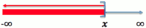
- 其中 X 是随机变数
- Ex 幸运之轮 FX(0.5) = P(X≤0.5) = 1/2
CDF 有什么用?
- 最有用的用途: 计算 X 落在某范围内的机率
- P(3< X≤ 5 ) = P(X≤ 5) - P( X<= 3)
- = FX(5) - FX(3)
- 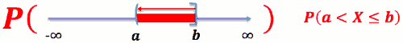
- P( a < X ≤ b ) = FX(b) - FX(a)
- P( a ≤ X ≤ b ) = FX(b) - FX(a) + P(X=a)
离散随机变数的 CDF 长怎样?
- Ex:X为骰子的点数，故P(X=1) =P(X=2) =P(X=3) =P(X=4) =P(X=5) =P(X=6) =1/6
- CDF: FX(x) = P(X ≤ x)
- 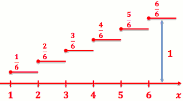
- P( 3< X≤ 5 ) = FX(5) - FX(3) = 5/6 - 3/6 = 2/6
- P( 3< X< 5 ) = P( 3< X≤ 5⁻ ) = FX(5⁻) - FX(3) = FX(5) - P(X=5) - FX(3) = 1/6
连续随机变数的 CDF 长怎样?
- Ex: X 为幸运之轮所停下的数字，X ∈ [ 0,1 )
- CDF: FX(x) = P( X ≤ x )
- 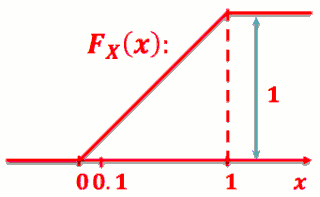
- P( 0.3< X≤ 0.5 ) = FX(0.5) - FX(0.3) = 0.5 - 0.3 = 0.2
- P( 0.3< X< 0.5 ) = FX(0.5⁻) - FX(0.3) = 0.5 - 0.3 = 0.2
CDF 的性质
- 离散随机变数之CDF:
- FX(x⁺) = FX(x)
- FX(x⁻) = FX(x) - P(X=x)
- 连续随机变数之CDF:
- FX(x⁺) = FX(x⁻) = FX(x)
- 共同性质
- FX(-∞) = P(X≤-∞) = 0
- FX( ∞) = P(X≤ ∞) = 1
- 0 ≤ FX(x) ≤1
4.3 机率质量函数 PMF (PROBABILITY MASS FUNCTION)
- 只有 离散随机变数 有 PMF
- 对任一个整数值的 离散随机变数 X , 我们定义其 PMF 为函数(小写p):
- pX(x) = P(X=x)
- Ex: X 为公平骰子之点数
- pX(3) = P(X=3) = 1/6
PMF 跟 CDF 的关系?
- PMF -> CDF
- 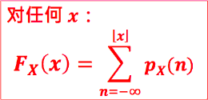
- CDF -> PMF
- PX(x) = FX(x⁺) - FX(x⁻)
机率分布 (Probability Distribution)
- 任何一个 PMF(或是之后介绍的 PDF)都称作是一种 机率分布 (将总和为 1 的机率分布在点上之故)
- 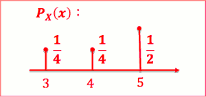
4.4 离散机率分布 I (DISCRETE PROBABILITY DISTRIBUTIONS)
- 观察一下
- 丢掷铜板:非正面，即反面，正面机率为 0.5
- 出门天气:非晴天，即雨天，晴天机率为 0.6
- 1 次实验，2 种结果。 在意某结果发生否 Bernoulli 机率分布
Bernoulli 机率分布
- PMF: 若实验成功机率为 p , 作 1 次实验， X 表成功次数
- CDF 见右图
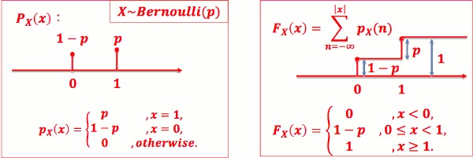
Binomial 机率分布
- 观察一下
- 阿宅鼓起勇气搭讪 10 人，若每次搭讪成 功机率为 0.6，10 次成功 8 次的机率为?
- 一周 5 天午餐在晓福买魔石汉堡，若每次制作超时机率为 0.9 5 天中有 3 天制作超时的机率为?
- 一周有 3 系夜，在活大乱停车 3 次，若每次遭阿伯拖之机率 为 0.8，那这 3 次被拖 2 次之机率为?
作 n 次实验，1 个机率，在意 n 次实验出 现某结果 k 次之机率 --> Binomial 机率分布
若实验成功几率为 0.6， 做10次实验， X表示成功次数
- 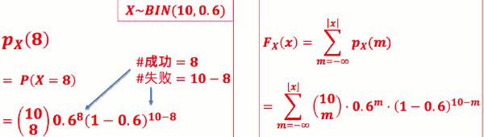
- left is PMF, right is CDF
- PMF: 若实验成功机率为 p, 作 n 次实验， X 表成功次数
- 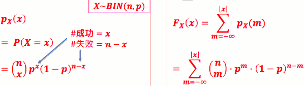
import numpy as np
import matplotlib.pyplot as plt
x1 = np.random.binomial( 10, 0.6 , 100000 )
# If you want the sum of all bars to be equal 1, weight each bin by the total number of values:
weights = np.ones_like(x1)/float(len(x1))
plt.hist(x1, normed=False, weights=weights, facecolor='green', alpha=0.5,bins=100)
plt.show()
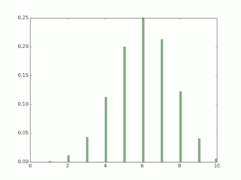
- another method, use scipy
import scipy, scipy.stats
x = scipy.linspace(0,10,11)
pmf = scipy.stats.binom.pmf(x,10,0.6)
import pylab
pylab.plot(x,pmf)
pylab.show()
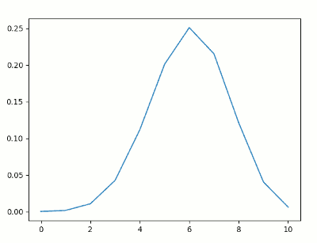
Uniform 机率分布
- 观察一下
- 丢公平骰:1 到 6 各点数出现机会均等
- 混哥考试:作答 A, B, C, D 机会均等
- 狡兔三窟:出现在窟 1、窟 2、窟 3 机会均等
- 1 次实验，n 种结果，各结果机率均等。在意某结果发生否 --> Uniform 机率分布
- 如果 X 等于 3,4,...,7 的机率均等
- 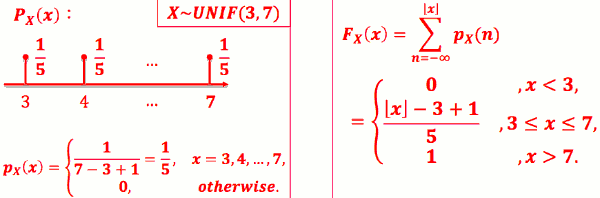
- 如果X等于a,a+1...,b 的机率均等
Geometric 机率分布
- 观察一下
- 阿宅告白:成功机率为 0.3，不成功誓不休。 问到第 5 次才告白成功之机率?
- 孙文革命:成功机率为 0.1，不成功誓不休。问到第 11 次才 成功之机率?
- 六脉神剑:那纠缠狂妈宝废物段誉每次要打出六脉神剑，打 的出来的机率为 0. 1。他在 10 次才打出六脉神剑的机率?
- 实验中出现某结果机率已知，重复操作实验至该结果出现为止。 在意某结果是在第几次实验才首次出现 --> Geometric 机率分布
- 六脉神剑:那妈宝废物段誉每次要打 六脉神剑，打的出来的机率为 0.1。他在第 10 次 才打出六脉神剑的机率?
- 败败败败败败败败败成 => 机率 = 0.9⁹ x 0.1
- 六脉神剑:那妈宝废物段誉每次要打 六脉神剑，打的出来的机率为 p 。他在第 X 次 尝试才成功打出六脉神剑。 X = x 的机率?
- 机率 = (1-p)x-1 · p
- 若实验成功机率为 p，尝 试到成功为止，作了 X 次尝试
- 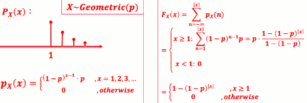
- 有失忆性！ 离散分布中唯一的失忆性分布
import numpy as np
import matplotlib.pyplot as plt
x1 = np.random.geometric( 0.3 , 100000 )
weights = np.ones_like(x1)/float(len(x1))
plt.hist(x1, normed=False,weights=weights, facecolor='green', alpha=0.5,bins=100)
plt.title('p = 0.3')
plt.show()
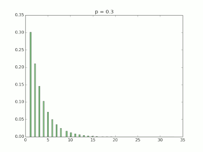
import scipy, scipy.stats
x = scipy.linspace(0,10,11)
pmf = scipy.stats.geom.pmf(x, 0.3 )
import pylab
pylab.plot(x,pmf)
pylab.show()
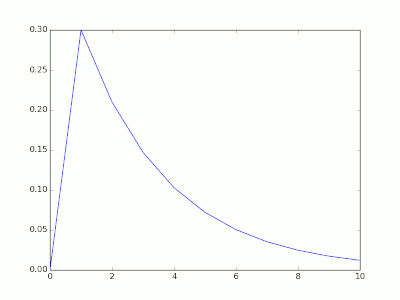
Pascal 机率分布
- 观察一下
- 自尊阿宅:阿宅邀约店员失败机率为 0.9， 若邀约失败达 4 次，阿宅便会自尊有损而放弃追求。问在阿 宅第 7 次邀约时决定放弃追求之机率?
- 六脉神剑:妈宝废物段誉每次打成功 5 次六脉神剑便功力耗 尽。若每次打的出来的机率为 0. 1。请问他在第 9 次时刚好 功力耗尽的机率?
- 实验中出现某结果机率已知，重复操作实验至该结果出现第 k 次 为止。在意到底在第几次实验才结束 --> Pascal 机率分布
- 六脉神剑:那妈宝废物段誉每次要打 六脉神剑，打的出来的机率为 0.1。成功 5 次便功 力耗尽。请问他在第 9 次时刚好功力耗尽的机率?
- 可能情况之一:败 成 败 成 败 成 成 败 成
- 此情况机率 = 0.9⁴ x 0.1⁵
- 刚好第9次才成功第5次的情况有几种? C(8,4)·C(1,1) = C(8,4)
- 所求机率 = C(8,4) x 0.9⁴ x 0.1⁵
- 六脉神剑:那妈宝废物段誉每次要打六脉神 剑，打的出来的机率为 p 。成功 k 次便功力耗尽。 他在第 X 次尝试才成功打出 k 次六脉神剑。 X = x 的机率?
- C(x-1, k-1) x (1-p)x-k x pᵏ
- 若实验成功机率为 p , 到第 k 次成功为止共作了 X 次
- 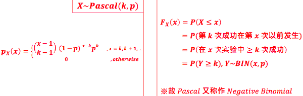
import numpy as np
import matplotlib.pyplot as plt
x1 = np.random.negative_binomial( 5, 0.1 , 100000 )
weights = np.ones_like(x1)/float(len(x1))
plt.hist(x1, normed=False, weights=weights, facecolor='green', alpha=0.5,bins=500)
plt.title('k=5, p=0.1')
plt.show()
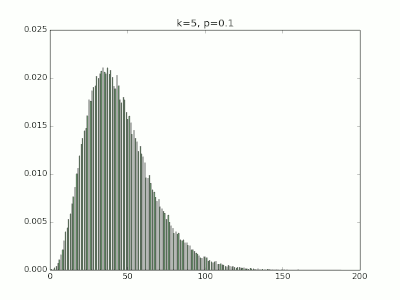
import scipy, scipy.stats
x = scipy.linspace(0,100,101)
pmf = scipy.stats.nbinom.pmf(x,5,0.1)
import pylab
pylab.plot(x,pmf)
pylab.show()
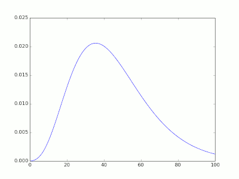
Poisson 机率分布
- 观察一下
- 转角夜宵:在晚上 平均每小时会有 10 人 来 跟转角哥买夜宵。 问摆摊 5 小时 有 60 人光顾之机率?
- 费雯被嘘:费雯兄 po 文后， 平均每分钟会有 5 人嘘之 。 问发文后 二十分钟 变成 X 之机率?
- 某结果出现之平均速率(rate: 次数/时间)已知。问持续观察某 时间长度后，看到该结果出现 k 次之机率? --> Poisson 机率分布
- 已知某事发生速率为每单位时间 λ 次，观察时间为 T 时间单位。 X 为该观察时间 内发生该事的总次数。则:
- PMF: 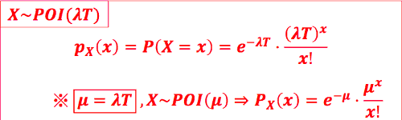
- CDF: 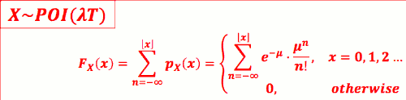
- 费雯被嘘:费雯兄 po 文后，平均 每分钟会有 5 人嘘之。问发文后 20 分钟变 成 XX (80 嘘) 之机率?
- λ = 5 嘘/分，若定义随机变量 X 为 20 分钟内的嘘数
- => X ~ POI(λT) = POI(100) = e⁻¹⁰⁰·100⁸⁰ / 80!
- 若条件是 每小时 300人嘘之，答案一样
>>> scipy.stats.poisson.pmf( 80, 100 ) 0.005197854125980 >>> (math.e**-100)*(100**80)/math.factorial(80) 0.005197854125980
- 理解泊松分布的特性:
- 它常用来描述大量随机试验中稀有事件出现的次数
- 比如 抽卡抽到 詹姆斯卡次数 ?
# 被嘘
# u = 5 * 20 == 100
import numpy as np
import matplotlib.pyplot as plt
x1 = np.random.poisson( 100 , 100000 )
weights = np.ones_like(x1)/float(len(x1))
plt.hist(x1, normed=False, weights=weights, facecolor='green', alpha=0.5,bins=100)
plt.show()
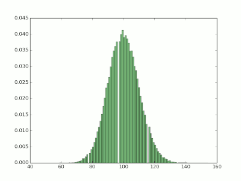
import scipy, scipy.stats
x = scipy.linspace(50,150,101)
pmf = scipy.stats.poisson.pmf(x, 100 )
import pylab
pylab.plot(x,pmf)
pylab.show()
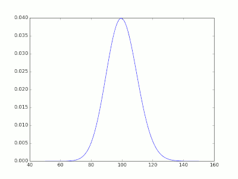
和Binomial 的关系
- 将T 划分成 长度为ΔT的小段 , 共有 n= T/ΔT 个小段
- 若发生速率为λ次/分, 每个小段会发生的机率 p= λΔT = λT/n
- 故 T时间内发生的次数 X~BIN(n,p) = BIN(n,λT/n)
- 泊松分布通常也用于二项分布的近似计算。
- 当n很大，而p很小时，在没有计算机时，二项分布的计算是非常麻烦的，而用泊松分布来近似计算可以降低大量的计算量。
- 一般来讲，n≥100，np≤10近似效果较好。